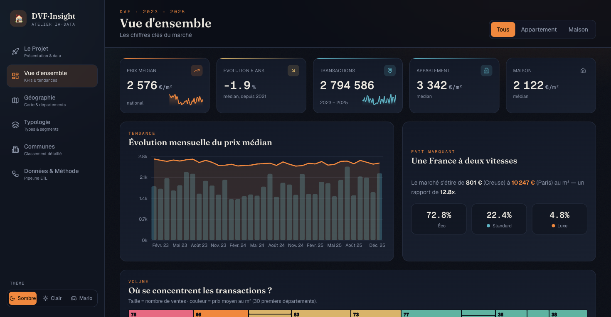
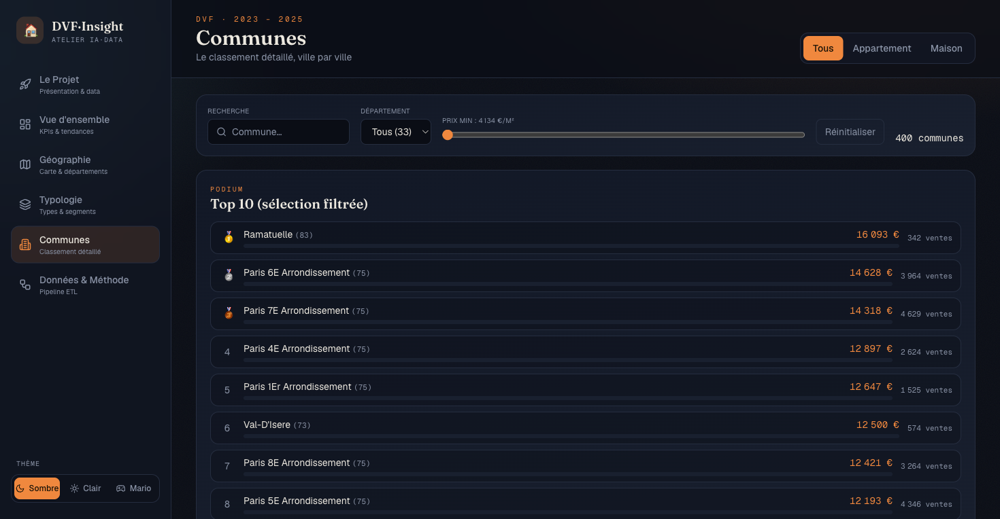
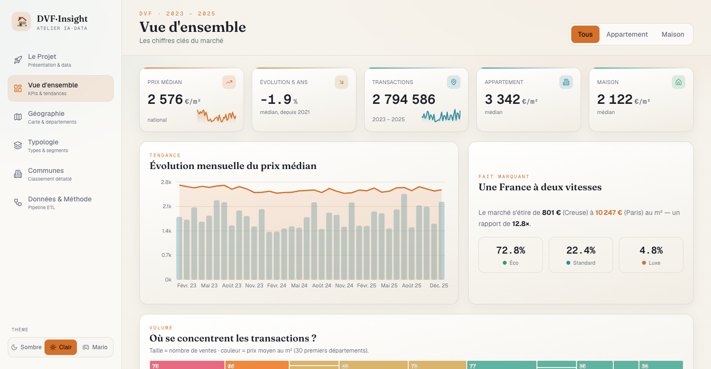

Lire le marché immobilier français en 10 secondes.
ImmoDash transforme 2,79 millions de ventes immobilières publiques (données DVF, 2023–2025, toute la France) en un tableau de bord clair, interactif et raconté.

Des millions de lignes illisibles
Chaque vente immobilière en France est publiée en open data. Brutes, ces millions de transactions n'ont aucun sens pour un humain. L'enjeu : en extraire une lecture immédiate.
Donner de la valeur à la donnée
Répondre en quelques secondes à : où achète-t-on, à quel prix, quel type de bien, et comment le marché évolue — par la carte, les classements, et un parcours interactif.
DVF — Demandes de Valeurs Foncières
Le registre public de toutes les mutations immobilières en France (DGFiP / data.gouv.fr). Une ligne = une vente. On en dérive l'indicateur clé — le prix au m² — et on le croise avec la population INSEE.
Les chiffres qui parlent
Graphiques générés en direct à partir des agrégats DVF — pas des images.
Évolution du prix médian au m² · 36 mois
Courbe = prix médian (€/m²) · barres = volume de ventes mensuel.
Segmentation du marché
Éco < 4 000 · Standard 4–8k · Luxe > 8 000 €/m².
Top 12 des départements les plus chers
Prix médian au m² (métropole).
Comment lire la donnée
- Prix au m² = valeur de vente ÷ surface. Permet de comparer un studio et une villa.
- Médiane (et pas moyenne) : la valeur du milieu, insensible aux extrêmes (un château ne la déforme pas).
- Segments : 3 classes de prix pour lire la structure du marché d'un coup d'œil.
- Ventes / 100k hab. : volume rapporté à la population (INSEE) = dynamisme réel.
Un pipeline, de la donnée brute à la dataviz
3 insights clés
Une France à deux vitesses : Paris ~10 250 €/m² contre ~1 500 €/m² dans les départements les plus abordables.
Sur 3 ans, le prix médian recule : un marché qui se refroidit (hausse des taux).
des biens sont « Éco » (< 4 000 €/m²). Le luxe (> 8 000) ne pèse que ~5 %, concentré à Paris et sur la Côte d'Azur.
Le dashboard en images


